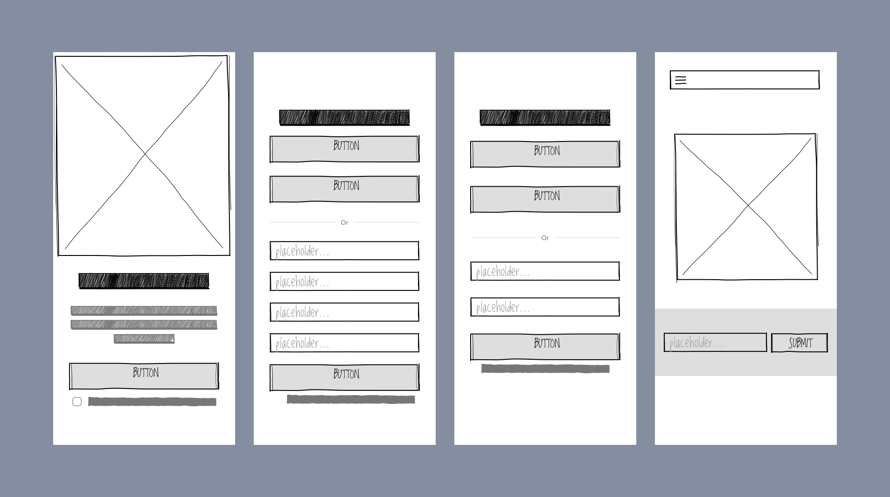
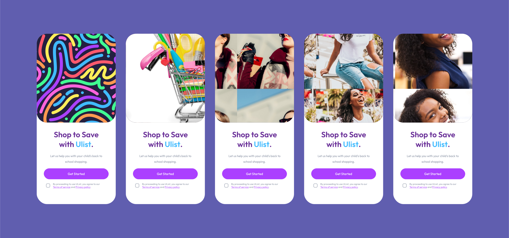

Lead designer
UList
Build Quick Shopping Experience for UList App.

My Role
Timeline
February, 2023 -- To present
Platform
Web, iOS and Android App
Introduction
UList is an e-commerce platform that aims to simplify the back-to-school
shopping experience for students and parents alike.
With UList, users can create customized shopping lists for all their
school-related needs using a web or mobile application.
The platform offers a user-friendly interface that enables customers to
easily browse through a wide range of products and add items to their lists.
Once the user has compiled their shopping list, UList takes care of the rest, sourcing the items on the list and delivering them to the user's doorstep, eliminating the need for tedious trips to the store or shops.
UList is the perfect solution for busy parents and students who want to save time and avoid the hassle of shopping for school supplies.
Once the user has compiled their shopping list, UList takes care of the rest, sourcing the items on the list and delivering them to the user's doorstep, eliminating the need for tedious trips to the store or shops.
UList is the perfect solution for busy parents and students who want to save time and avoid the hassle of shopping for school supplies.
Problem
The problem that UList is aiming to solve is the stressful and time-consuming process of
back-to-school shopping for students and parents. Traditionally, this process involves
traveling to multiple stores, browsing through a variety of products, and manually
creating a shopping list. This can be overwhelming, especially for busy parents who
are juggling work and family responsibilities.
Goal
UList's goal is to simplify this process by providing a user-friendly platform where users
can easily create customized shopping lists and have their items delivered to their doorstep.
This not only saves time but also reduces the stress associated with back-to-school shopping.
Impact
Since UList is a new product on the market, tracking metrics is important to showcase its impact and success by
providing evidence of the platform's effectiveness and potential for growth in the future.
1. User Adoption
UList could aim to reach 10,000 users in its first year of operation, with a goal of increasing this
number by 50% in the second year. By the end of the second year, UList would have 15,000 registered users.
2. Customer Satisfaction
UList could conduct customer satisfaction surveys and aim for a satisfaction rating of 4 out of 5.
This would indicate that users find the platform to be easy to use and helpful for simplifying
the back-to-school shopping process.
3. Conversion Rates
UList could aim for a conversion rate of 20%, meaning that one out of every five users who creates
a shopping list on the platform goes on to complete a purchase. This would represent a significant
impact on the back-to-school shopping market
4. Repeat Users
UList could aim for a repeat user rate of 30%, meaning that three out of every ten users return
to the platform for future back-to-school shopping needs. This would demonstrate that users
find the platform to be a valuable and reliable resource.
5. Delivery Times
UList could aim for an average delivery time of 1 business day for items on users'
shopping lists. This would ensure that items are delivered in a timely manner and would
contribute to a positive user experience.
By achieving these estimated values, UList would have a significant impact on the back-to-school shopping market, helping to simplify the process for students and parents and saving them time and stress.
By achieving these estimated values, UList would have a significant impact on the back-to-school shopping market, helping to simplify the process for students and parents and saving them time and stress.
Our Users
Before designing started, focus was directed to identifying who the customers of UList
would be and how they would genuinely use the app. Two user archetypes were identified
through UX research.
1. Students
Students would use UList to create customized shopping lists for their back-to-school needs.
They would browse through a wide range of products and add items to their lists using the
platform's user-friendly interface. Once their shopping list is complete, they would submit
it to UList for sourcing and delivery.
Students Characteristics
- Age: Students using UList would likely range from elementary school to college age, with ages typically ranging from 6-24 years old.
- Tech-Savvy: Students are likely to be comfortable using technology and mobile applications, making it easy for them to use UList's web or mobile application to create their shopping lists.
- Limited Budget: Most students have limited budgets and may be price-sensitive when it comes to purchasing back-to-school supplies. As a result, UList's price comparison feature would be particularly valuable to them.
-
Convenience-Oriented: Students may prioritize convenience when it comes to back-to-school shopping, especially if they are balancing schoolwork, extracurricular activities, and part-time jobs. UList's delivery service would make it easier for them to get the items they need without having to spend time physically going to stores.
2. Parents
Parents would use UList to help simplify the back-to-school shopping process for their children. They would
create shopping lists on behalf of their children, selecting the items they need and submitting the list to UList
for sourcing and delivery.
Parents Characteristics
- Age: Parents using UList could range from mid-20s to late-50s, with ages typically ranging from 25-55 years old.
- Busy Schedule: Parents are likely to have busy schedules, balancing work, family responsibilities, and other commitments. UList's delivery service would save them time and make it easier for them to get back-to-school supplies for their children.
- Budget-Conscious: Parents are often responsible for paying for their children's back-to-school supplies and may be price-sensitive when it comes to purchasing these items. UList's price comparison feature would be particularly valuable to them.
-
Tech-Savvy:
Parents are increasingly comfortable using technology to manage their daily lives, making it
easy for them to use UList's web or mobile application to create their children's
shopping lists.
Process
Design Sprints
As a solo designer, the purpose of conducting design sprints was to help streamline the design process
and ensure that I am creating a user-friendly and effective platform. Through the iterations made, it
allowed quick identification and testing of potential solutions to the problem UList is aiming to solve.
User Flows
Considering our primary users:- parents and children, I have mapped each archetype to their
user journey on the app. Here are some user flows I have considered in this case study.
User Registration
- User clicks on the "Sign Up" button on the UList homepage
- User enters their personal information, including name, email, and password
- User confirms their email address through a verification link
- User logs in to the UList platform using their email and password
Creating a Shopping List
- User navigates to the "Create a List" form
- User browses through the available products and selects the items they need
- User can search for specific products or filter results by category, brand, price, or other criteria
- User adds the selected items to their list and can review the list before finalizing the purchase.
Checkout and Payment
- User clicks on the "Checkout" button from their shopping list
- User enters their shipping and billing information
- User can review their order and make any necessary changes
- User selects their payment method (e.g. credit card, PayPal, etc.) and enters payment details
- User confirms their purchase and receives an order confirmation
Order Tracking
- User can track their order status and delivery through the UList platform
- User receives notifications via email or mobile app as their order is processed and shipped.
- User can view the estimated delivery date and time and track the delivery in real-time
Wireframes
I sketched multiple user flows to visualize ideas quickly. My focus at this stage is to diverge
first, converge later. Here are some early sketches of the Brand page.
Early Designs
A sneak peek into my early wireframes, mid-fidelity designs and drafts. The designs have went
through at least 10 iterations per screen. It is due to several reasons: Change in business
direction, shift in product roadmap or simply to improve the user experience.
Home Tab
We want our home tab to depict a happy and stress-free shopping experience.
These are the various designs I've tried and did not make the cut. It could be due a number of reasons like unclear value proposition,
cluttered designs, and lack of scalability of the images used.
Usability Testing and Customer Reviews
Customer interviews were done remotely. I've tested the prototype with 17+ people in a controlled
testing environment as well as the guerilla way.
Final Designs

Future
Bug fixes
For a project of this scale, even though we have already fixed plenty of bugs before public
release, there are bound to be minor bugs.
Post-launch optimization
This is a crucial next step for every UX improvement or product launch. With informed,
actionable insights, we are able to design a better experience for our consumers.
Continue to design better experiences
To follow through our product roadmap and continue to stick to our design principles.